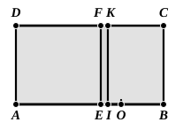

VOLUME II: BOOKS III–IX¶

Similar plane figures and application of areas: 4 definitions and 33 propositions including angle bisectors, mean proportionals, and extreme and mean ratio (VI.30).

Foundations of arithmetic and number theory: 22 definitions and 39 propositions starting from the Euclidean GCD algorithm (VII.1–2) and prime divisibility.

Geometric progressions in whole numbers (continued proportions), square and cube numbers, and commensurability of ratios across 27 propositions.